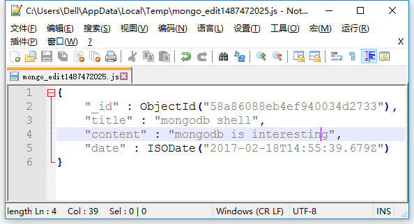

启动MongoDB
安装好MongoDB，将其bin目录配置到系统环境变量path后，在磁盘上创建一个数据库保存目录，比如D:\MongoDB，然后打开命令窗口输入如下命令启动MongoDB服务：
1 | > mongod --dbpath=d:\mongodb |
当看到输出如下信息，表明启动成功，端口号为27017：
1 | ... |
打开另外一个命令窗口作为客户端，输入mongo即可连上服务：
1 | > mongo |
语法糖
MongoDB shell自带了一些语法糖：
1 | show dbs 列出所有DB |
使用shell执行脚本
假如在C:\Program Files\MongoDB\Server\3.4\bin目录下创建一个test.js脚本文件：
1 | print("hello MnogoDB") |
有两种方式让MongoDB执行该脚本：
连上服务前
1 | > exit |
可看到，shell页面执行了test.js脚本并如期输出hello MongoDB（路径必须和脚本所在路径一致）。
连上服务后
连上服务后，可使用load()函数执行脚本：
1 | > load("test.js") |
另外一个就是可以在shell中初始化一些辅助函数，比如定义一个hello.js：
1 | var hello = function(){ |
在shell中加载这个脚本，hello函数就可以使用了：
1 | > typeof hello |
.mongorc.js
对于一些常用的脚本，如果每次启动服务后都用load()手动加载，这将很繁琐。对于这些常用的脚本，我们可以将其放在.mongorc.js文件中，因为MongoDB启动的时候，会自动加载该脚本。
比如在.mongorc.js加入一句问候语：
1 | print("Hello mrbird,welcome to use mongoDB") |
连接服务时，shell窗口输出：
1 | > mongo |
也可以加如一些实用功能，比如添加防止自己误删的js脚本：
1 | var no = function(){ |
测试一下：
1 | > show collections |
配合编辑器
在shell中编辑文档是一件麻烦的事情，我们可以在.mongorc.js文件中加入自己的脚本编辑器：
1 | EDITOR = "\"D:\\Program Files (x86)\\Notepad++\\notepad++.exe\"" |
这里指定编辑器为notepad++，然后在shell中即可实用edit命令来编辑一个变量：
1 | > db.blog.findOne() |
界面弹出：

在编辑器中修改content内容后，保存并退出编辑器，变量就会被重新解析然后加载回shell：
1 | > db.blog.update({title: "mongodb shell"},msg) |
可看到，文档已修改。
《MongoDB权威指南》读书笔记